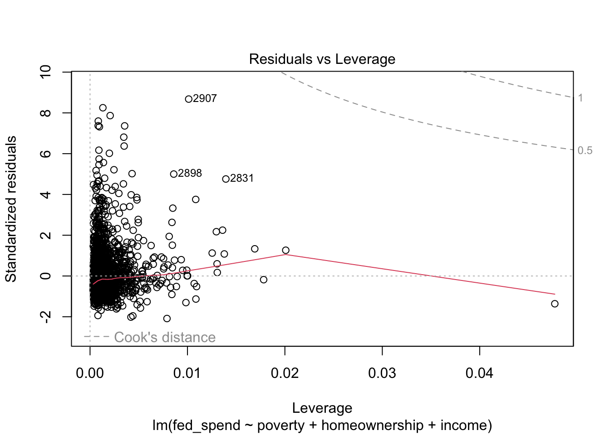

24 R Regression Diagnostics
24.1 Learning Outcomes
In this chapter, you will learn how to:
- Produce residual vs.fitted (RVFP) and residual vs.leverage plots (RVLP)
- Check for multicollinearity using variance inflation factor (VIF)
- Exclude observations from a regression model
24.2 Set-up
To complete this chapter, you need to
- Start a R Markdown document
- Change the YAML to at least the following. Feel free to add arguments.
---
title: 'R Chapter 24'
author: 'Your name'
output:
html_document:
theme: spacelab
df_print: paged
---- Load the following packages
library(tidyverse)
library(moderndive)
library(car)
library(gvlma)
library(carData)We will use the States dataset within the carData package. Be sure to view the documentation for these data in the Help tab of the bottom-right pane by typing the name of the dataset in the search bar.
24.3 Diagnostic Plots
Diagnostic plots provide us suggestive visual evidence that one or more regression assumptions have failed to hold in our model. Producing diagnostic plots is very easy. Chapters 6 and 21, the following regression was run.
fedpov2 <- lm(fed_spend ~ poverty + homeownership + income, data = selcounty)get_regression_table(fedpov2)| term | estimate | std_error | statistic | p_value | lower_ci | upper_ci |
|---|---|---|---|---|---|---|
| intercept | 23.519 | 1.333 | 17.645 | 0.000 | 20.905 | 26.132 |
| poverty | -0.056 | 0.021 | -2.674 | 0.008 | -0.097 | -0.015 |
| homeownership | -0.126 | 0.012 | -10.736 | 0.000 | -0.149 | -0.103 |
| income | 0.000 | 0.000 | -7.723 | 0.000 | 0.000 | 0.000 |
Once we have our regression results saved to an object, all we need to do is use the plot function, as shown in the code below. The plot function produces four plots. The first plot is the RVFP and the fourth plot is the RVLP. These two plots alone can be used to investigate your regression models LINE assumptions and influential data, but the second and third plots are useful too.
plot(fedpov2)
We want to see no obvious pattern in the RVF plot and a relatively straight line running along the 0 reference line. For this RVF plot, we can see an obvious pattern where the positive residuals are much greater than the negative residuals. This is a classic sign that the regression model violates assumption N. Whether the red line trends in one direction or another away from 0 tells us whether assumption L is violated. This assumption appears to be relatively OK.
The second plot is the Normal Q-Q plot. As the name suggests, it is especially useful for checking assumption N, which was already a concern based on the RVF plot. We want the points of a Normal Q-Q plot to track along the straight, dotted line. We see clear evidence now that assumption N has failed. We will need to address this in our model in order to have valid estimates.
The RVF plot did not exhibit an obvious fanning out that would indicate a violation of assumption E (i.e.heteroskedasticity). The third plot is the Scale-Location plot. It is especially useful for checking assumption E. We want to see a straight line. Here, we see some indication that the variance in our residuals is not equal as our fitted/predicted values increase.
Finally, the RVL plot tells us whether any observations impose problematic influence on our regression results. As with all of the diagnostic plots produced by plot, the three most problematic observations are identified by their row number in the data. We can see that observation 2907 is the largest outlier (i.e.has the largest residual), but has only a moderate amount of leverage. The other two observations are not as much of outliers as other observations, but their leverage combined with their residual makes them more influential than the other outliers. It does not appear as though any observations have a Cooks distance high enough to warrant removal.
Exercise 1: Using the States data, run
a regression model where either SATV or SATM
is the outcome. Once you have the model, produce its diagnostic plots.
Do any assumptions appear to be a concern? Do any particular
observations appear problematic?
24.4 Variance Inflation Factor
VIF is a common way to check for excessive multicollinearity. There is no strict rule for identifying multicollinearity, but a VIF between 5 and 10 signals a potential problem with multicollinearity. A VIF greater than 10 is a strong indicator of multicollinearity. To obtain the VIF, we can use the vif function from the car package like so.
vif(fedpov2) poverty homeownership income
2.6846 1.2016 2.4083 None of the VIF values for the explanatory variables come close to 5. Therefore, we can be confident that multicollinearity is not an issue.
Exercise 2: Obtain VIF values for your regression model. Is multicollinearity a concern?
24.5 Statistical test on assumption
Visuals may be all we want or need, but we can actually conduct hypothesis testing on the critical regression assumptions for linearity, normality, and equal variance. This is also quite easy to do with the gvlma function from the gvlma package (gvlma stands for global violation of linear model assumptions).
gvlma(fedpov2)
Call:
lm(formula = fed_spend ~ poverty + homeownership + income, data = selcounty)
Coefficients:
(Intercept) poverty homeownership income
23.51859688 -0.05596900 -0.12582419 -0.00008593
ASSESSMENT OF THE LINEAR MODEL ASSUMPTIONS
USING THE GLOBAL TEST ON 4 DEGREES-OF-FREEDOM:
Level of Significance = 0.05
Call:
gvlma(x = fedpov2)
Value p-value Decision
Global Stat 32128.558 0.0000000000 Assumptions NOT satisfied!
Skewness 4772.305 0.0000000000 Assumptions NOT satisfied!
Kurtosis 27323.830 0.0000000000 Assumptions NOT satisfied!
Link Function 4.702 0.0301309727 Assumptions NOT satisfied!
Heteroscedasticity 27.721 0.0000001401 Assumptions NOT satisfied!Clearly, there are some serious issues with this model. That first Global Stat line is like a holistic judgment of the model based on the lower four tests. Sometimes, a model might slightly violate one assumption but not the others, resulting in a satisfied global stat.
The Skewness and Kurtosis tests pertain to the normality of the residuals. As we already knew from the plots, our residuals are not normal. The Link Function pertains to the linearity of the model. This is a sign that our model is simply misspecified, perhaps requiring some nonlinear transformations or a more complicated model outside the scope of this chapter. Lastly, Heteroscedasiticity tests the assumption of equal variance in the residuals. This assumption wasnt quite as clear from the plot. Here we receive a clear message that this too is a problem.
24.6 Excluding observations
We should be careful and transparent when deciding to exclude observations from an analysis. When in doubt, do not exclude observations. In this running example, I would not exclude any observations. The problems with the model are not due to one or a few observations. Sometimes, the diagnostic plots will provide clear evidence that removing a few observations will solve the problems.
First, I may want to know which counties were identified in my diagnostic plots. The code below does this via subsetting.
selcounty[c(2907, 2874, 1991, 2898, 2831),]| name | state | fed_spend | poverty | homeownership | income | income_1000 | |
|---|---|---|---|---|---|---|---|
| 2907 | Fairfax city | Virginia | 45.08154 | 5.0 | 72.1 | 97900 | 97.900 |
| 2874 | Prince George County | Virginia | 45.70920 | 6.7 | 75.4 | 64171 | 64.171 |
| 1991 | Foster County | North Dakota | 45.84445 | 7.3 | 75.8 | 41066 | 41.066 |
| 2898 | Alexandria city | Virginia | 33.05986 | 7.8 | 45.7 | 80847 | 80.847 |
| 2831 | Fairfax County | Virginia | 26.64889 | 5.1 | 71.9 | 105416 | 105.416 |
Interesting that most of the most problematic counties come from Virginia. Perhaps something deeper is going on with Virginia, or perhaps this is a meaningless coincidence.
If we decide an exclusion of observations is defensible, then we can exclude observations directly within the lm function to avoid the need to create a new dataset. In the code below, I exclude the observations in the above table from the regression model.
fedpov3 <- lm(fed_spend ~ poverty + homeownership + income,
data = selcounty[-c(2907, 2874, 1991, 2898, 2831),])This data has over 3,000 observations, so it is unlikely that removing 5 will have any notable impact on the results, but lets check.
get_regression_table(fedpov3)| term | estimate | std_error | statistic | p_value | lower_ci | upper_ci |
|---|---|---|---|---|---|---|
| intercept | 24.159 | 1.284 | 18.817 | 0.000 | 21.642 | 26.676 |
| poverty | -0.066 | 0.020 | -3.250 | 0.001 | -0.105 | -0.026 |
| homeownership | -0.123 | 0.011 | -10.940 | 0.000 | -0.145 | -0.101 |
| income | 0.000 | 0.000 | -9.490 | 0.000 | 0.000 | 0.000 |
The point estimates have changes a little, but the hypothesis tests are the same. Has this changed whether assumptions are violated?
gvlma(fedpov3)
Call:
lm(formula = fed_spend ~ poverty + homeownership + income, data = selcounty[-c(2907,
2874, 1991, 2898, 2831), ])
Coefficients:
(Intercept) poverty homeownership income
24.1588786 -0.0655030 -0.1232241 -0.0001026
ASSESSMENT OF THE LINEAR MODEL ASSUMPTIONS
USING THE GLOBAL TEST ON 4 DEGREES-OF-FREEDOM:
Level of Significance = 0.05
Call:
gvlma(x = fedpov3)
Value p-value Decision
Global Stat 23865.871 0.00000 Assumptions NOT satisfied!
Skewness 4106.412 0.00000 Assumptions NOT satisfied!
Kurtosis 19751.553 0.00000 Assumptions NOT satisfied!
Link Function 5.449 0.01958 Assumptions NOT satisfied!
Heteroscedasticity 2.457 0.11699 Assumptions acceptable.Globally, no, although heteroskedasticity appears to no longer be a problem. The other tests could be due to a variety of complicated issues. Perhaps the theoretical relationships implied by the model are totally wrong. Perhaps the residuals among counties within each state are strongly correlated, thus violating assumption I.
The most straightforward potential solution in this case is to try a log transformation the outcome at least and perhaps one or more explanatory variables. In the below model, I log-transform federal spending and income.
fedpov4 <- lm(log(fed_spend) ~ poverty + homeownership + log(income),
data = selcounty[-c(2907, 2874, 1991, 2898, 2831),])Error in lm.fit(x, y, offset = offset, singular.ok = singular.ok, ...) : NA/NaN/Inf in 'y'
It appears some counties have federal spending that is 0 or negative, which cannot cannot be log-transformed. Lets see what those are.
selcounty[-c(2907, 2874, 1991, 2898, 2831),] %>%
filter(fed_spend <= 0)| name | state | fed_spend | poverty | homeownership | income | income_1000 |
|---|---|---|---|---|---|---|
| Skagway | Alaska | 0 | 10.8 | 59.1 | 73500 | 73.500 |
| Wrangell | Alaska | 0 | 8.3 | 78.7 | 50389 | 50.389 |
Fortunately, only two counties were the problem. Now Ill go ahead create a separate dataset to keep things clear.
selcounty2 <- selcounty[-c(2907, 2874, 1991, 2898, 2831),] %>%
filter(fed_spend > 0)And rerun the regression.
fedpov4 <- lm(log(fed_spend) ~ poverty + homeownership + log(income),
data = selcounty2)Does this fix our assumptions?
gvlma(fedpov4)
Call:
lm(formula = log(fed_spend) ~ poverty + homeownership + log(income),
data = selcounty2)
Coefficients:
(Intercept) poverty homeownership log(income)
12.92070 -0.01675 -0.01254 -0.89687
ASSESSMENT OF THE LINEAR MODEL ASSUMPTIONS
USING THE GLOBAL TEST ON 4 DEGREES-OF-FREEDOM:
Level of Significance = 0.05
Call:
gvlma(x = fedpov4)
Value p-value Decision
Global Stat 1210.5140072 0.0000 Assumptions NOT satisfied!
Skewness 452.0579572 0.0000 Assumptions NOT satisfied!
Kurtosis 758.3481943 0.0000 Assumptions NOT satisfied!
Link Function 0.1076608 0.7428 Assumptions acceptable.
Heteroscedasticity 0.0001948 0.9889 Assumptions acceptable.This appears to have fixed the issue with linearity, but normality of the residuals is still an issue. Lets produce a new set of diagnostic plots to visualize the difference all this has made.
plot(fedpov4)
With the exception of the Normal Q-Q plot, all of the plots look much better. Unfortunately, we have exhausted the options at our disposal for fixing our regression (insofar as this course is covers).
As you can see from this example, regression diagnostics can take you down some interesting paths of investigation. Sometimes the solution is obvious. Other times the solution still eludes you after several iterations.
Exercise 3: Try to correct your regression model based on your diagnostic results. Maybe exclude one or more observations from your regression model.